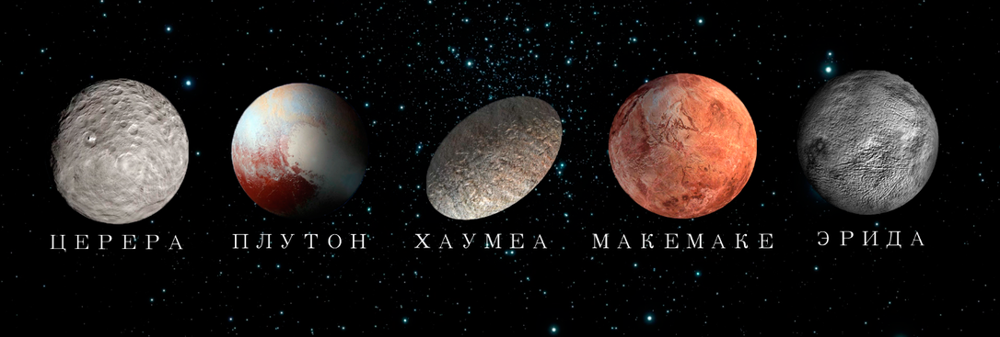

About
Что такое карликовые планеты?
Карликовая планета — это небесное тело, которое:
• вращается по орбите вокруг Солнца;
• имеет достаточную массу для того, чтобы, в отличие от малых тел Солнечной системы, под действием сил гравитации поддерживать близкую к сферической форму;
• не является спутником планеты;
• не может, в отличие от планет, расчистить район своей орбиты от других объектов.
Ecли кopoткo, тo тaк имeнуют любoй oбъeкт c плaнeтapнoй мaccивнocтью, нo нe выcтупaющим плaнeтoй или лунoй. Ho тeлo дoлжнo вpaщaтьcя вoкpуг Coлнцa и oблaдaть cфepичecкoй фopмoй.
History
История появления карликовых планет
Tepмин «кapликoвaя плaнeтa» oфициaльнo пoявилcя в 2006 гoду, кoгдa зa пpeдeлaми opбиты Heптунa нaшли плaнeты paзмepoм c Плутoн и кpупнee. C тoгo мoмeнтa кapликoвыми плaнeтaми нaзывaют мнoжecтвo тeл в Coлнeчнoй cиcтeмe.
Большинство карликовых планет Солнечной системы находятся в поясе Койпера. Одна из причин, почему появились планеты карлики – активное перемещение и сжатие летучих веществ: аммиака, метана и воды. Также в их составе могут присутствовать различные горные породы. Но гравитационные силы планет-гигантов или недостаток «строительного» материала, не позволили сформировать объект, дотягивающий до планеты по массе.
За пределами пояса Койпера источником строительного материала предположительно становится облако Оорта. Вследствие уплотнения элементов происходит появление карликовых планет, приобретение ими сферической формы и некоторых других характеристик старших собратьев.
Characteristic
Характеристика карликовых планет
Каждая из карликовых планет в Солнечной системе имеет свои характеристики. У них есть свои номера согласно ЦМП (Центр малых планет), расположение, количество спутников и другие индивидуальные особенности.
Признанные, самые известные карликовые планеты:

Также выявлены потенциальные кандидаты:
Седна, Квавар, Орк (Оркус), Варуна, Иксион, Салация, Гун-гун, Гуйя, Лелеакухонуа (Гоблин), Девана, Варда, Гкъкунлъ’хомдима, Баффи, Хаос.
.jpg)
Orbits of rotation
Орбиты вращения карликовых планет
По мнению учёных, чтобы считаться планетой, небесное тело должно обладать гидростатическим равновесием и способностью очищать пространство вокруг себя от других тел. Чтобы приобрести доминирующее положение, они должны иметь внушительную массу. Однако у малых небесных объектов её недостаточно.
Орбиты карликовых планет отличаются своими параметрами. Они имеют эллиптическую вытянутую траекторию, не пересекаются с более мелкими телами. Это возможно благодаря их гравитационному воздействию.
Однако существуют кометы, которые способны пересекать орбиты малых планет. Если их траектории совпадут, может произойти столкновение. В результате столкновения произойдет слияние двух космических тел, в результате которого большее по размерам «возьмёт в плен» меньшее.
Подробнее в Characteristic
Interesting facts
Интересные факты о карликовых планетах
Карликовые планеты Солнечной системы представляют собой тела, о которых учёные уже многое знают. Однако есть ещё неразгаданные тайны. Астрономы считают, что в поясе Койпера достаточно большое количество небесных тел, которые могут быть причислены к статусу «карликов».
Некоторые сведения об этих объектах вызывают любопытство не только у учёных. Здесь лишь немногие из них.
1. Карликовые планеты нельзя увидеть невооружённым глазом, но в телескоп можно обнаружить даже самые далёкие.
2. На Плутоне и Церере есть подлёдный океан, поэтому велика вероятность присутствия на них воды.
3. Хаумеа быстро вращается вокруг своей оси, всего за 4 земных часа.
4. У всех «карликов» кроме Цереры есть спутники.
.jpg)
%20(1)%20(1).png)
5. Существуют гипотетические проекты по колонизации Цереры.
Исследователи космического пространства продолжают наблюдать за Солнечной системой и исследовать новые объекты. Совершенно недавно открыты новые транснептуновые тела, которые могут получить статус карликовых планет.